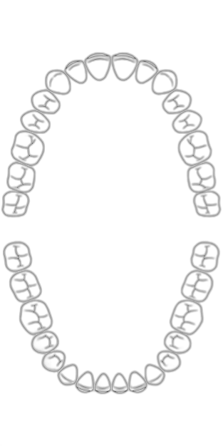

<ion-header class="ion-no-border">
  <ion-toolbar color="primary">
    <ion-buttons slot="start">
      <ion-back-button defaultHref="tratamientos/{{userId}}"></ion-back-button>
    </ion-buttons>
  </ion-toolbar>
</ion-header>
<div class="ion-page mt-3" id="main-content">
  <ion-content color="primary">
    <!--Parte blanca  -->
    <div class="d-flex justify-content-center align-items-end h-100">
      <!-- Contenido de la parte blanca -->
      <div id="function-container">
        <div class="mt-2">
          <p class="fs-3 title">Haga clic sobre un diente para ver mas hacerca de su estado.</p>
        </div>
        <div class="d-flex justify-content-center">
          
        </div>
      </div>
    </div>
  </ion-content>
